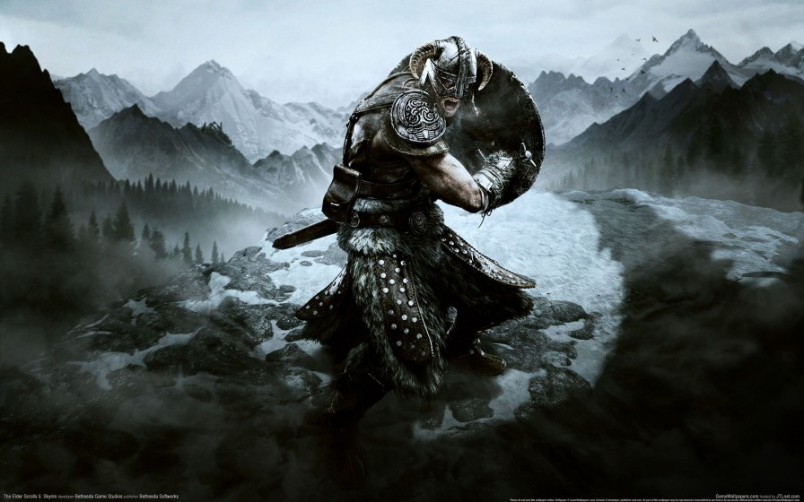
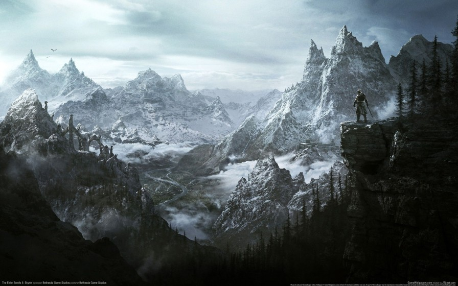

首页


Previous
Next
商品名称: 《上古卷轴5：天际》
价 格:￥188.00
商品类型：游戏
运费:包邮
库存：有货
1.此商品不支持7天无理由退货
2.此商品由 海囤全球 发货并提供售后服务
3.此商品不提供国内购物发票
4.此商品支持白条30天免息或分期支付，不可使用京豆、京东卡、京东E卡、余额支付，不支持货到付款
5.根据中国海关总署要求，您所购买的商品清关入境需要提供身份证信息进行入境申报，请您配合。我们不会向第三方泄露您的资料，请您放心
立即购买
加入购物车
详 情
《上古卷轴5：天际》是由Bethesda开发制作的角色扮演类（RPG）单机游戏，是开放世界游戏的代表作。《上古卷轴5：天际》于2011年11月11日登陆PC、PS3、Xbox 360等平台。之后的重制版《上古卷轴5：天际 特别版》于2016年10月28日登陆PC、PS4、Xbox One等平台， 2017年11月18日登陆Nintendo Switch 本作的背景时间设定在《上古卷轴4：湮没》的200年之后，地点为人类帝国的天际省。玩家将扮演传说中的龙裔，踏上对抗世界毁灭者——巨龙奥杜因的征途。另外，还有天际内战、魔神器、地下遗迹、组织势力等各 类支线和隐藏任务，具有庞大的世界观和高自由度。《上古卷轴5：天际》除了本身的内容外，还支持各种非官方的模组（MOD），这些模组包括新增剧情、画面美化、设定修改甚至模型重塑等等。丰富的模组，提升了 整个游戏的多样性与可玩度。 游戏评价: 在游戏越来越重视玩家交互和精致的画面的年代，《上古卷轴5》注定孤独。在这个年代还坚持彻头彻尾的单机游戏，也难能可贵。除开这些，《上古卷轴5》的素质也绝对出色，这个世界比起以往任何一款《上古卷 轴》的世界都要庞大，玩家可以做的事情很多。可以说《上古卷轴5》是西方RPG的神髓。《上古卷轴5：天际》没有辜负众多RPG老戏骨的期盼，在当前单机游戏流年不利的情况下，它依然达到了接近完美水准，画面精致细腻同时极具大气，无懈可击的操控系统保证玩家不受过多非游戏因素的困扰，精细入微的图像把冒险历程变成豪华的视觉享受，浩瀚的天赋技能树系统总能让有心的玩家找到一条与众不同的角色养成之路。与这些优点相比，些许的瑕疵不过是烈日映射下的萤火之光，Betheda可以通过随后推出的DLC扩展修补缺陷，增加新的剧情、装备和技能。
评 价
暂无评价